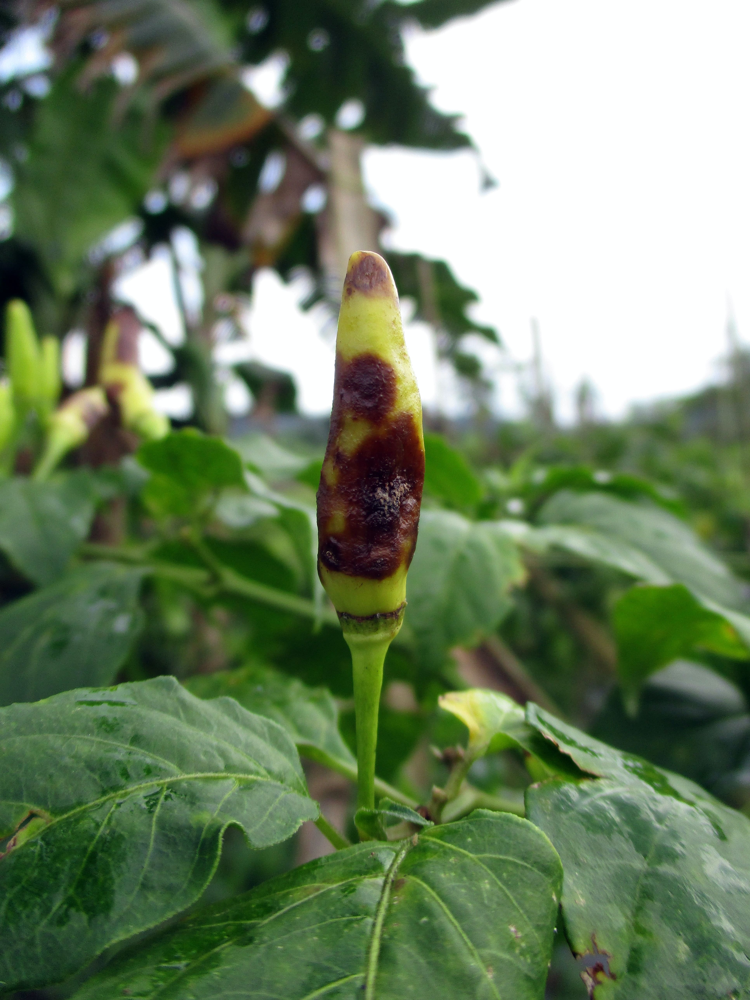
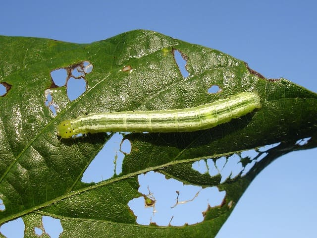
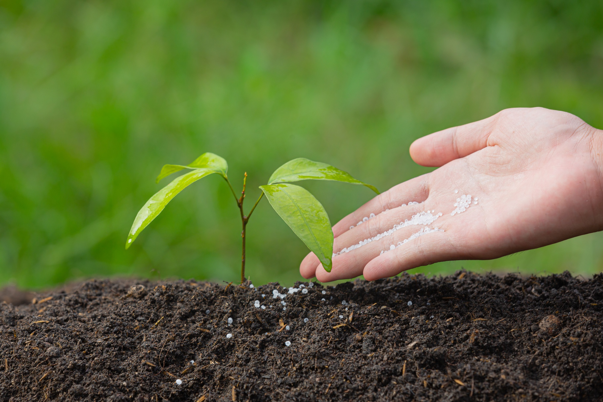
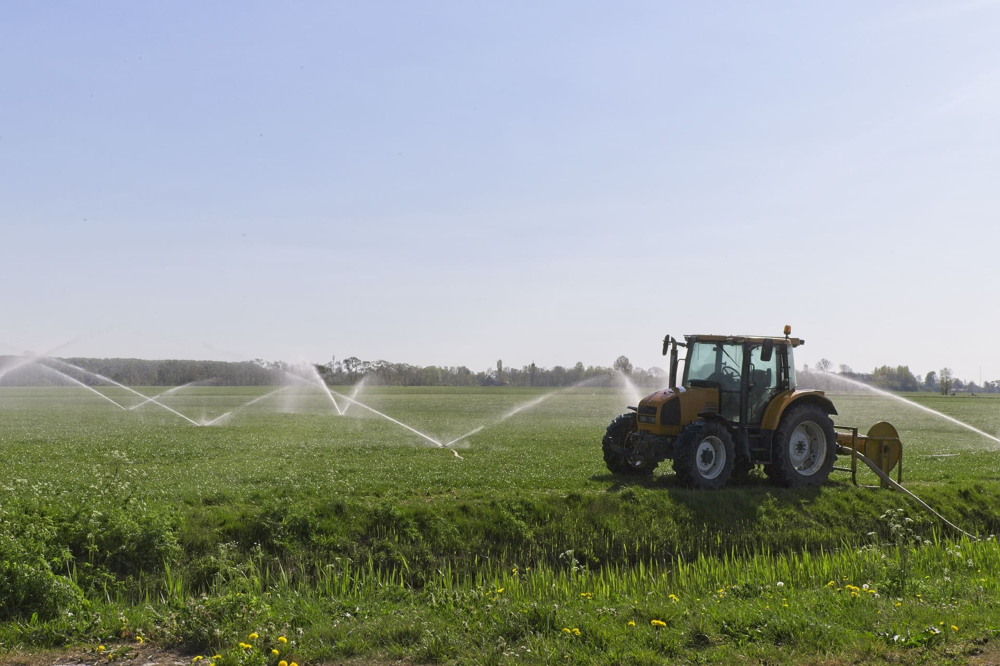

Prestamos serviços de:
•
Interpretação de análise de solo;
•
Análise de doenças e pragas em culturas agrícolas e pastagens;
•
Avaliação de viabilidade econômica de propriedades rurais;
•
Recomendação de adubação e calagem;
•
Planejamento e confecção de projetos de irrigação;
•
Recomendação de herbicidas para o controle de plantas daninhas.